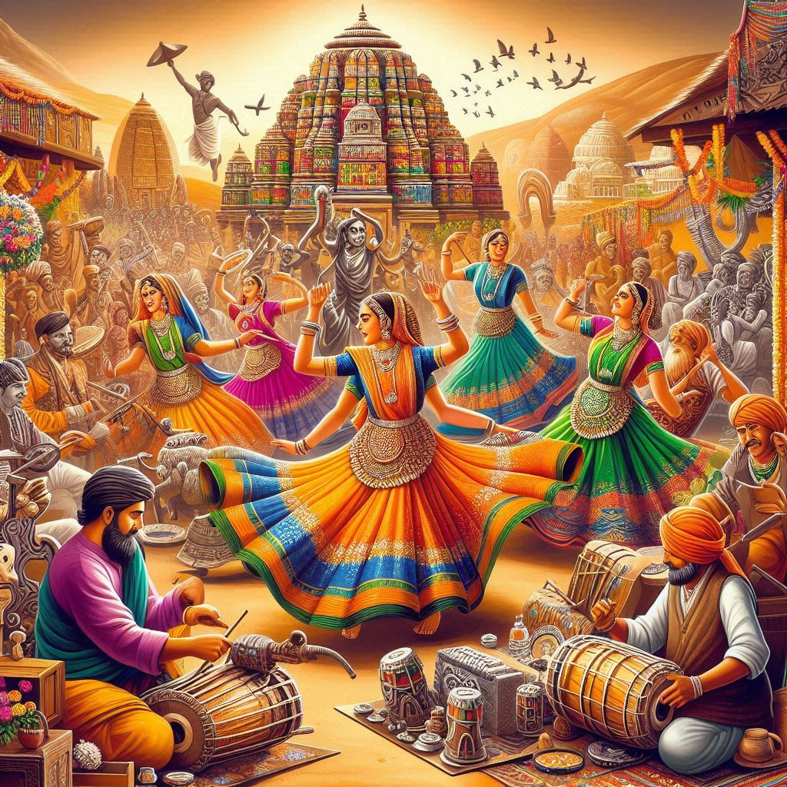
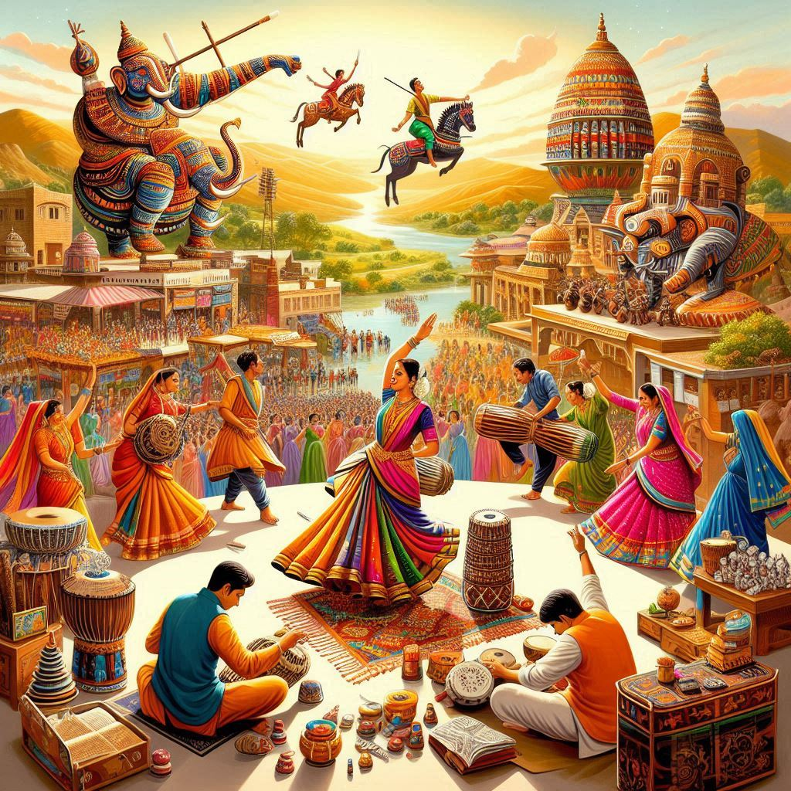

Culture of Madhya Pradesh
Madhya Pradesh, often called the "Heart of India" due to its central location, has a rich and diverse culture that reflects the state's history, traditions, and customs. The culture of Madhya Pradesh is deeply influenced by its historical legacy, with influences from various dynasties, including the Mauryas, Guptas, Rajputs, and the Marathas, alongside strong tribal traditions. The state has a blend of traditional and modern elements, and its culture is showcased through its festivals, art, dance, music, language, and cuisine.
Music and Dance:
Madhya Pradesh has a vibrant musical heritage. Folk music plays an essential role in the lives of the people, with songs celebrating everything from nature to love and life’s various aspects. Classical music, particularly Dhrupad, is also prominent.
Famous Dance Forms:
- Pandavani: A traditional narrative performance of Mahabharata stories, popular in the Chhattisgarh region of Madhya Pradesh. The performer sings while narrating the epic in a dramatic form.
- Gaur Dance: Performed by the Gond tribe, this dance is part of their tribal heritage and is performed during various festivals and celebrations.
- Karma Dance: A tribal dance performed by the Gonds and other tribes, associated with the Karma festival.
- Matki Dance: A form of folk dance in which performers balance pots on their heads and dance to rhythmic music, common during festive occasions.
Art and Craft:
Madhya Pradesh is known for its diverse handicrafts, especially textiles, pottery, and handwoven fabrics.
- Chanderi and Maheshwari sarees: Famous for their fine texture and elegant patterns, these sarees are a significant part of Madhya Pradesh’s textile heritage.
- Bamboo Craft: Particularly famous in tribal areas, with intricate bamboo items crafted for both functional and decorative purposes.
- Terracotta and Stone Carvings: The state is also known for its terracotta art and stone carvings, especially seen in temples like the Kandariya Mahadev Temple in Khajuraho.


Festivals:
Madhya Pradesh celebrates numerous festivals, some of which have a unique cultural significance:
- Navratri: The festival of Navratri is celebrated with great enthusiasm, especially in the form of Garba and Dandiya dances in cities like Indore and Bhopal.
- Makar Sankranti: This harvest festival is celebrated with traditional songs, dances, and fairs across the state, marked by the flying of kites.
- Teej: Celebrated by women in the state, this festival marks the arrival of monsoon and involves traditional songs, dances, and fasting.
- Gudi Padwa: Celebrated as the New Year by the people of Madhya Pradesh, especially the Marathi community, with feasts and festive gatherings.
- Bhagoria: A tribal festival celebrated in the western parts of the state, where young men and women meet in colorful fairs, and it is accompanied by traditional dances and rituals.
Cuisine:
The cuisine of Madhya Pradesh is rich, flavorful, and diverse, heavily influenced by the food habits of various regions, including tribal and royal traditions.
- Dal Bafla: A popular dish made of wheat dough dumplings served with dal (lentils), resembling the traditional Dal Baati of Rajasthan.
- Poha: A simple and tasty dish made from flattened rice, often served for breakfast.
- Rogan Josh: A signature dish with Persian roots, cooked with lamb and aromatic spices.
- Biryani: Madhya Pradesh has its own variation of the famous Biryani, with different ingredients and methods of preparation.
- Samosa: Popular as a snack throughout the state, especially stuffed with potatoes and peas, or sometimes with meat fillings.
- Lassi: A refreshing yogurt-based drink, usually served chilled.
Languages:
Madhya Pradesh is a multilingual state, with the majority of the population speaking Hindi as the primary language. However, many people also speak regional languages like Malvi, Bundeli, Nimadi, Chhattisgarhi, and various tribal languages like Gondi and Korku. These languages are an essential part of the state’s identity and culture.
Architecture:
The architecture of Madhya Pradesh is a blend of ancient temples, forts, and palaces.
- Khajuraho Temples: Famous worldwide for their intricate erotic sculptures and architectural brilliance, the temples in Khajuraho are a UNESCO World Heritage site.
- Sanchi Stupa: An ancient Buddhist complex that includes the Sanchi Stupa, a UNESCO World Heritage site that reflects the rich Buddhist heritage of the region.
- Gwalior Fort: Known for its massive structure and historical significance, this fort is one of the most famous landmarks of Madhya Pradesh.
Tribal Culture:
The tribal communities in Madhya Pradesh, including the Gonds, Baigas, Korkus, and Bhils, have a strong presence and are integral to the state’s culture. They have their own unique customs, rituals, and art forms. The tribes are also known for their distinctive forms of dance, music, and handicrafts, which they celebrate through various festivals and ceremonies.
Conclusion:
The culture of Madhya Pradesh is a fusion of various regional, religious, and historical influences. The state’s traditions, languages, art, dance, music, and cuisine provide a rich and colorful cultural landscape that is central to India’s identity. It reflects the deep-rooted history and vibrant diversity of the state, which continues to thrive and evolve.